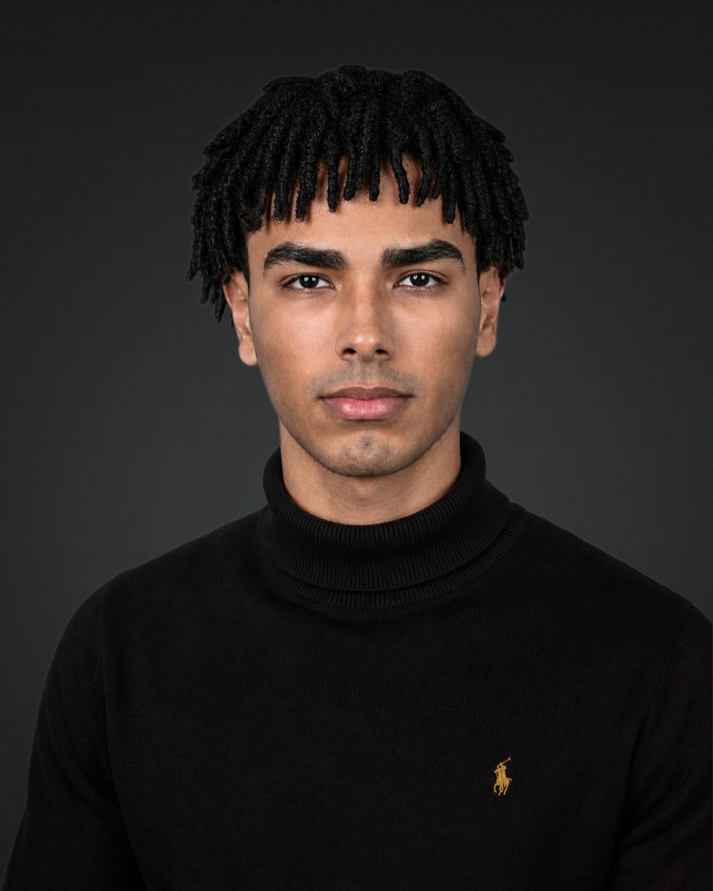

01 / SIRAI
Our mission
To bring people together to tackle challenges facing communities in Sudan through shared knowledge, local experience and practical action.
Our purpose
In Sudan, neighbors and volunteers often come together when essential services are under strain. SIRAI starts from that spirit of shared responsibility.
An independent initiative in development. Not a registered NGO. No donations are being solicited.
Illustrative photograph. Not SIRAI fieldwork.
To bring people together to tackle challenges facing communities in Sudan through shared knowledge, local experience and practical action.
A Sudan where communities have the opportunity, resources and voice to shape their own futures.
Three practical priorities guiding how SIRAI intends to grow.
Develop clear information and practical tools that help communities navigate everyday challenges.
Use local knowledge, feedback and collaboration to shape what SIRAI works on next.
Aim to support one small community-shaped pilot by the end of 2027, if safety, resources and local partnerships allow.
We’ll begin where our experience is strongest, while leaving space for communities to shape what comes next.
Locally identified challenges around water, energy, essential services and everyday living conditions.
Accessible guides, peer learning and practical skills that people can adapt and share.
Supporting the people closest to a problem to shape decisions and help sustain solutions.
Knowing how much water or electricity a household needs is one thing. Being able to afford it, reach it safely and decide what matters most is another. Both sides deserve attention.
As SIRAI learns from users, we want to better understand which practical choices are limited by cost, access and local conditions. We are not claiming those questions have been answered.
Our free tools relate to goals on water (SDG 6), energy (SDG 7) and learning (SDG 4). Alignment is not endorsement or measured impact.
Read the framework ↗The African Union identifies water security, renewable energy, skills and people-driven development among its long-term priorities.
Read the framework ↗These are public frameworks for context. SIRAI is independent and is not affiliated with the UN or African Union.
SIRAI brings together local insight, practical ideas and a belief that even small efforts can matter.

I started SIRAI because I wanted to turn concern for Sudan into something practical, however small.
I was born in Port Sudan, and no matter where life has taken me, Sudan has always felt like home. The time I've spent there taught me something I've never forgotten. People look out for each other, even when they have very little to spare. That spirit is what I want SIRAI to build on.
It's hard to see what Sudan is going through. I know a small initiative won't change everything, but I don't think that means we should do nothing. We can listen, share what we know, and try to make things a little easier, one step at a time. Even a small difference in someone's life would mean a lot to me.
My background is in engineering, but I don't want SIRAI to be defined by a degree or by one person's ideas. I want it to be a place where people feel heard, bring what they know, and work on things that genuinely matter to them. That's the kind of work I'd be proud to be part of.
Publish the website and accessible community-planning resources in multiple languages.
Invite feedback from Sudanese community members and volunteers; improve the toolkit accordingly.
Work with local collaborators on a small, clearly documented activity when feasible and safe.